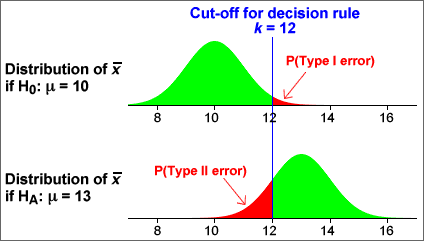

Using a sample mean to make decisions
We assume initially that a population is normally distributed with known standard deviation, σ, and that we want a test for the hypotheses:
H0 : μ = μ0
HA : μ > μ0
Large values of  throw
doubt on H0, so our decision should be of the form:
throw
doubt on H0, so our decision should be of the form:
| Data | Decision |
|---|---|
| accept H0 | |
| reject H0 |
The probabilities of Type I and Type II errors are shown in the red cells of the table below:
| Decision | |||
|---|---|---|---|
| accept H0 | reject H0 | ||
| Truth | H0 is true | ||
| HA (H0 is false) | |||
Example: Test for the hypotheses:
H0 : μ = 10
HA : μ > 10
If it is known that σ = 4, then the mean of a random sample of n = 16 values is approximately normal with mean µ and standard deviation 1. If the decision rule rejects H0 when the sample mean is less than k, the diagram below illustrates the probabilities of Type I and Type II errors.

Increasing k reduces P(Type I error) but increases P(Type II error). The choice of k for the decision rule is a trade-off between the acceptable sizes of the two types of error.